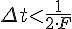
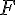

В соответствии с теоремой котельникова исходную функцию можно восстановить по точкам, полученным через интервал
 где  - ширина спектра
Например, для оцифровки звуковых сигналов с частотами от 20Гц до 20КГц обычно используется частота дискретизации 44КГц
При дискретизации сигнала по уровню необходимо уметь определять минимальное требуемое количество уровней квантования
Например, если используется 3-х разрядный АЦП то он будет иметь только () уровней квантования
При этом погрешность квантования составит 12.5%
Для 8-и разрядного АЦП погрешность квантования будет 0.42(нет)%